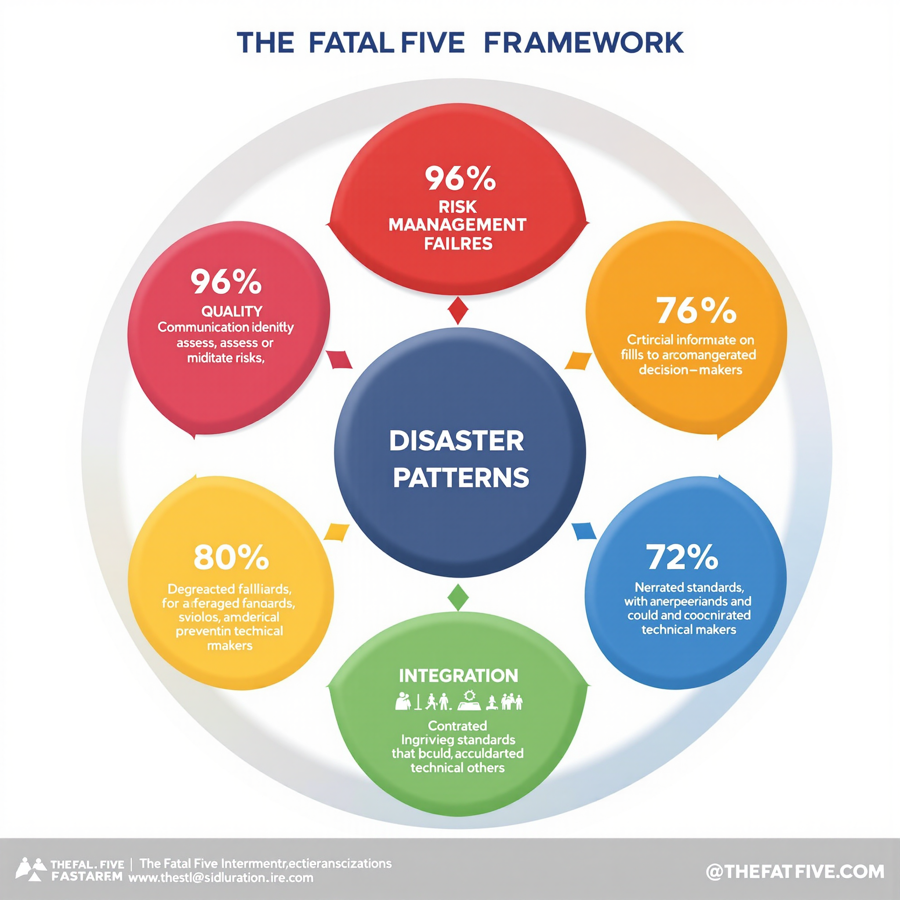
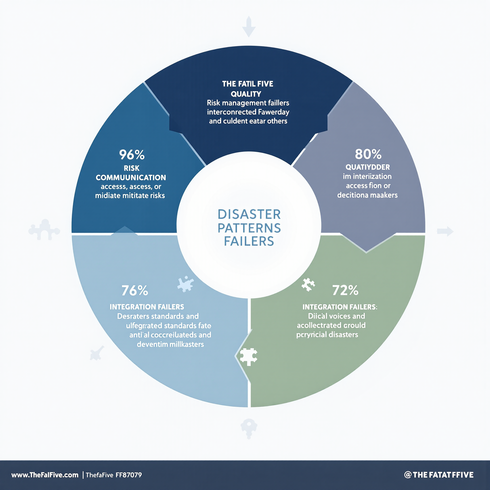
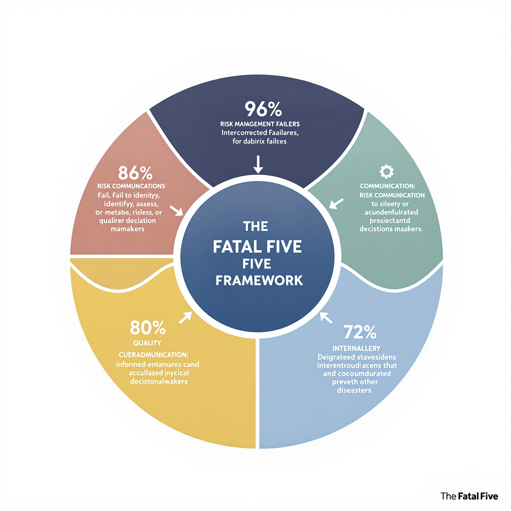
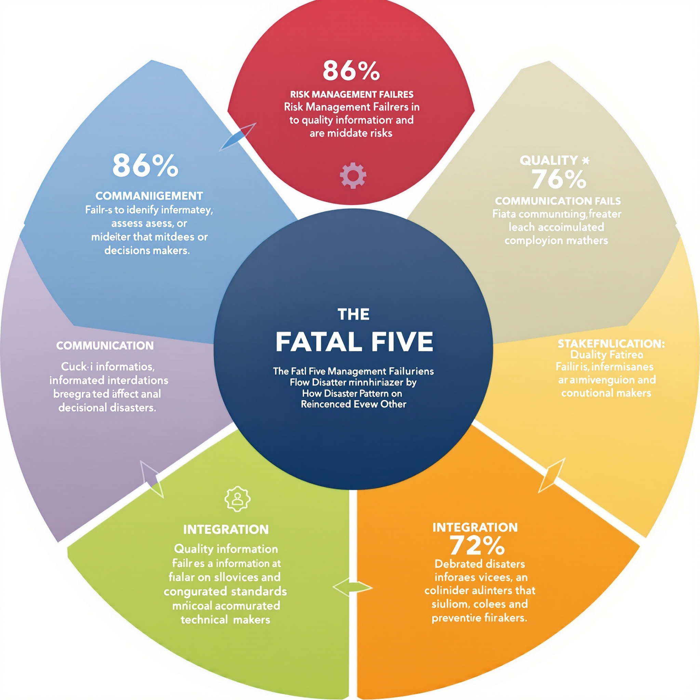

Current Analysis
COVID-19 Response: A Fatal Five Case Study
How the global pandemic response exemplified all five failure patterns, and what Agile methodology could have changed.
The Fatal Five Framework reveals why 96% of disasters follow the same predictable patterns—and how Agile project management can prevent them.

Five interconnected failure patterns appear in 72-96% of all major disasters. Understanding these patterns is the key to prevention.
Organizations fail to properly identify, assess, or respond to known risks. The Titanic received six ice warnings but had no systematic process for evaluating them.
Critical information fails to reach decision-makers or gets lost in organizational hierarchies. NASA engineers' O-ring concerns never reached launch decision-makers.
Degraded standards and accumulated technical debt create catastrophic vulnerabilities. The Challenger's O-rings had shown problems for years before the disaster.
Critical voices are ignored or marginalized. Aberfan residents warned about unstable coal tips for years before 116 children died in the school collapse.
Different systems, teams, and processes fail to coordinate effectively. Piper Alpha's sophisticated safety systems couldn't coordinate during the emergency.

The most comprehensive analysis of disaster patterns ever conducted, examining 50 major disasters spanning 174 years to reveal the Fatal Five patterns that cause preventable catastrophes.
First systematic analysis of disasters through project management lens
Specific Agile practices that address each Fatal Five pattern
ROI analysis showing 800:1 cost-benefit ratios for prevention
COVID-19, Surfside collapse, and other recent disasters analyzed
Forthcoming 2025 • Seeking Publisher
How Agile Project Management Prevents Disasters

Discover your organization's vulnerability to each of the Fatal Five patterns. Get your personalized risk profile and prevention recommendations.
Free comprehensive evaluation of your organization's disaster prevention capabilities.

Regular analysis of current events through the Fatal Five framework, plus practical implementation guidance.
How the global pandemic response exemplified all five failure patterns, and what Agile methodology could have changed.
Practical strategies for creating environments where team members can raise concerns without fear.
How the 2021 condominium collapse in Florida demonstrates classic Fatal Five patterns in infrastructure management.
Why traditional risk management fails and how Agile approaches create living, actionable risk assessment.
Bring the Fatal Five framework to your organization, conference, or industry event.
Keynote presentation revealing the universal patterns behind major disasters and how organizations can break the cycle.
Interactive workshop teaching practical Agile techniques for preventing each Fatal Five pattern in your organization.
How to create organizations that get stronger from stress and uncertainty rather than breaking under pressure.
"The Fatal Five framework completely changed how we think about project risk. This should be required training for every project manager."— PMI Chapter Leader
Ready to implement the Fatal Five framework in your organization? Let's discuss how disaster prevention can transform your project success.